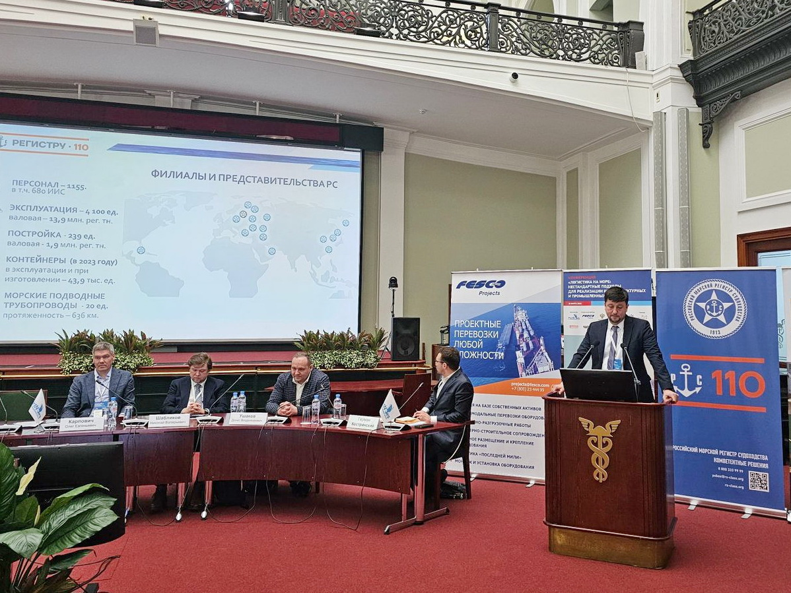

Заседание научно-технического совета государственного предприятия «ЛогиТранс»
27.06.2024
25 июня 2024 года состоялось заседание научно-технического совета государственного предприятия «ЛогиТранс» по рассмотрению научно-исследовательских работ и работ по реализации мероприятия «Типовое проектирование», выполненных во II квартале 2024 года по заказам Главного управления автомобильных дорог Министерства транспорта и коммуникаций Республики Беларусь. Традиционно работа проходила по двум секциям: дорожной и мостовой; на заседаниях секций присутствовали представители дорожных предприятий и организаций.
На дорожной секции были рассмотрены работы по укреплению грунтов и применению асфальтогранулята для устройства обочин, покрытий и оснований автомобильных дорог. Разработка требований к сдвигоустойчивости асфальтобетонных смесей для условий эксплуатации Республики Беларусь в рамках гармонизации системы СПАС вызвала особый интерес у представителей организаций холдинга «Белавтодор», имеющих большой опыт работы по устройству асфальтобетонных покрытий на автомобильных дорогах Российской Федерации.
Рассмотрена и одобрена научно-исследовательская работа, выполняемая на факультете транспортных коммуникаций БНТУ по исследованию влияния дефектов на параметры надежности дорожных конструкций нежесткого типа.
Кроме рассмотрения работ, выполняемых государственным предприятием «ЛогиТранс», был заслушан доклад старшего преподавателя кафедры «Мосты и тоннели» БНТУ В.А. Ходякова по теме диссертационной работы «Динамическое воздействие от подвижного состава в зоне сопряжения пролетного строения и подходов на автодорожных мостах на основе диагностической информации». Доклад вызвал большую дискуссию, были высказаны замечания и пожелания о необходимости дальнейшего продолжения исследований по разработке критериев оценки состояния деформационных швов.